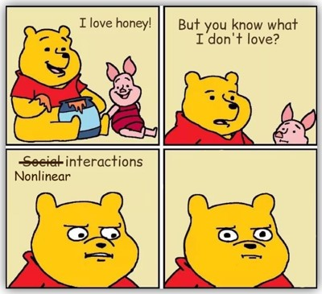

Properly model, plot, and interpret your nonlinear interactions.
Author
Jon Brauer
Published
July 18, 2023
Two lemmings confused by nonlinear interactions (with help from DALL-E)
Preamble
This is the first of a two-part blog series on modeling moderators in criminological data. I started writing this series as a single entry designed introduce the need and a method for disentangling indirect and interaction effects in the presence of a potential exposure-mediator interaction. That topic is now the focus of Part 2 in this series.
Along the way, I intended to briefly cover issues I routinely find myself raising in manuscript reviews in criminology related to the estimation and interpretation of interaction effects with binary or skewed count outcome variables. First, estimating interactions with such data using linear regression methods can generate misleading interaction terms that are data artifacts of a poorly fitting model. Second, generalized linear regression models with nonlinear link functions (e.g., logistic, Poisson, and negative binomial regression) may generate coefficients that more accurately summarize the underlying data generating process, but these coefficients - and especially the interaction terms - often are misinterpreted.
We touched upon this topic in our previous post on collider bias but, as an issue I encounter repeatedly when reviewing manuscripts, I felt it needed a more detailed treatment before digging into exposure-mediator interactions. Well, this important aside ultimately was not brief at all, so it seemed more appropriate to write it as a standalone post. So, this topic is now the focus of Part 1.
Now, let’s get started with an “imaginary” story about an imaginary author before moving on to illustrate these issues using imaginary (ok, simulated) data.
Two papers walk into a bar…
Imagine the following: In one study, a researcher hypothesizes the existence of a causal mediation process, such that parental support causes delinquency both directly and indirectly through its mediated effect on strong moral beliefs. Then, with this theoretical assumption at work, they build linear regression models to test for and then find evidence of an indirect effect, which leads to a published paper describing support for this hypothesized causal process. That assumed causal process can be simply depicted in the following causal diagram or directed acyclic graph (DAG):
Code
#|message=FALSE# devtools::install_github("BS1125/CMAverse")#Load libraries # library(here) #start by loading here package for self-referential file directory structure# # library(groundhog) #load groundhog package for reproducible date-specified library loading# # here() #check here() working directory# # get.groundhog.folder() # check default groundhog working directory - may be diff than here()# set.groundhog.folder(here()) #set groundhog working directory to same as here()# groundhog.day="2023-06-15" #assign date as object (at least two days before today)# pkgs <- c("tidyverse", "simstudy", "ggplot2", "patchwork", "truncnorm", "see",# "dagitty", "ggdag", "sjPlot", "ggthemes", "margins", # "ggraph", "gt", "gtsummary")# groundhog.library("github::BS1125/CMAverse", groundhog.day)# groundhog.library(pkgs, groundhog.day)library(tidyverse)library(here)library(simstudy)# https://cran.r-project.org/web/packages/simstudy/vignettes/simstudy.html# https://kgoldfeld.github.io/simstudy/articles/simstudy.htmllibrary(ggplot2)library(patchwork)library(truncnorm)library(see)library(dagitty)library(ggdag)library(sjPlot)library(ggthemes)library(margins)library(CMAverse)library(ggraph)library(gt)library(gtsummary)#function to shorten arrows (edges)# https://stackoverflow.com/questions/65420136/how-do-you-adjust-the-arrows-in-a-ggplot-of-a-ggdagshorten_dag_arrows <-function(tidy_dag, proportion){# Update underlying ggdag objecttidy_dag$data <- dplyr::mutate(tidy_dag$data, xend = (1-proportion/2)*(xend - x) + x, yend = (1-proportion/2)*(yend - y) + y,xstart = (1-proportion/2)*(x - xend) + xend,ystart = (1-proportion/2)*(y-yend) + yend)return(tidy_dag)}#build dagnointDAG <-dagify( Delinquency ~ ParentSupport + StrgMoralBlfs, StrgMoralBlfs ~ ParentSupport, exposure ="StrgMoralBlfs",outcome ="Delinquency",coords=list(x=c(ParentSupport=1, StrgMoralBlfs=1.5, Delinquency=2),y=c(ParentSupport=0, StrgMoralBlfs=0.5, Delinquency=0) )) %>%tidy_dagitty() #shorten edgesnointDAGp <-shorten_dag_arrows(nointDAG, 0.08)#plot dagfig1 <- nointDAGp %>%ggplot(aes(x=x, y=y, xend=xend, yend=yend)) +geom_dag_edges(edge_color="darkgrey") +geom_dag_text(label=c("Delinquency", "Parental\nSupport", "Strong\nMoral\nBeliefs"), color="#56B4E9") +theme_dag() +guides(fill ='none', color ='none') +scale_y_continuous(expand=expansion(mult=c(0.2,0.2))) +#change default expansion on y-axis min & max# ggtitle("DAG w/mediation & no interaction") + theme(plot.title =element_text(size =12))ggsave("fig1.png")
After submitting the mediation paper for review and potential publication, imagine the researcher then considers the possibility that parental support and strong moral beliefs might also interact in predicting delinquency. For instance, perhaps they now posit that moral beliefs have a more pronounced negative effect on delinquency among youth who perceive low parental support, yet moral beliefs might have a weak or null effect (e.g., it might be a redundant cause) among youth who perceive high parental support.
Though the causal processes for both “paper 1” and “paper 2” could be represented by the same structural DAG depicted in Figure 1 above,1 it is common for criminologists to explicitly depict moderating relationships in causal diagrams. So, for the sake of familiarity, I also present a modified causal diagram depicting the posited moderation (interaction effect) for “paper 2” in Figure 2 below. The moderation indicator is a red dashed arrow to signify its departure from traditional DAG rules.
No problem! We know what to do - just build another regression model, throw in an interaction term, and test for the interaction, right? Another paper, another brick in the wall of (cargo cult) science.
Please, don’t leave just yet. I promise this is not another blog entry about piecemeal or salami sliced publications.2 While on the subject of what this blog is not about, I will also refrain from discussing the perverse structural incentives that motivate piecemeal publishing.3
Those are topics for another day. In this blog series, my main focus is to introduce some common issues criminologists face, often unknowingly, when modeling moderating relationships. Ultimately, my aim in Part 2 will be to build upon the examples in Part 1 to introduce a statistical issue that might be wreaking havoc behind the scenes in many situations like the one described above: the the inability to distinguish mediation from moderation in commonly used regression-based tests of indirect or interaction effects in the presence of an exposure-mediator interaction. In doing so, I will make the case that both studies should really be combined into a single study in which the researcher explicitly models both the mediating and moderating relationships and then uses a potential outcomes approach to decompose the overlapping indirect and interaction effects. But, before we get there, I want to point out a couple other interaction-related pitfalls that threaten to snare researchers on the road to testing interaction effects.
When data are normally non-normal, it’s interactions all the way down
Before attempting to tackle the problem of distinguishing mediation from moderation (in Part 2), let’s first consider that the outcome variable in the imaginary papers discussed above - delinquent behaviors - is a relatively rare event. As such, delinquency measures tend to be quite positively skewed, resembling rare Poisson or negative binomial event count distributions.
Why does this matter? Well, as some criminologists have warned, testing a moderation hypothesis using a multiplicative interaction term in a linear regression model fit to a highly skewed outcome variable like delinquency can generate significant interaction effect estimates that are statistical artifacts caused by improper model specification. Meanwhile, if these outcomes are modeled using generalized linear equations with nonlinear link functions (e.g., logistic; Poisson; negative binomial), then the interpretation of interaction terms changes drastically and, technically, all model coefficients are conditional - essentially, it is interactions all the way down.
Put simply, conceptualizing, estimating, and interpreting interaction effects is much harder than many people realize when their outcome variable is binary, rare event, and/or highly skewed, as is often the case when studying crime. In these situations, I will illustrate why it is advisable to specify the proper functional form, to use caution or restraint when interpreting coefficients, and to visualize interactions by plotting them, preferably on the (predicted probability or event rate) outcome scale.
“It’s not you, it’s me.” Nonlinear interactions are statistical heartbreakers.
Outline of the post
In Part 1, I will illustrate some of these issues with two examples using simulated data.
Example 1
In the first example, I assume the causal process from the first imaginary paper (“paper 1”) is the true underlying data generating process by simulating data that include a direct effect of parental support on delinquency and an indirect effect through strong moral beliefs. Importantly, in this first example, I do not include a multiplicative interaction term (i.e., an exposure-mediator interaction) in the linear equation predicting logged delinquency event rates when simulating the data. So, if a linear model estimates a non-negligible and statistically significant interaction coefficient, then the result might be due to random sampling variation, or it could be an artifact from inappropriate model specification (e.g., applying a linear model to a skewed outcome variable).
The central aim of this first example is to demonstrate such an interaction artifact in a linear model. Along the way, I hope to reinforce some important intuitions about generalized linear models with nonlinear link functions (e.g., logistic; Poisson; negative binomial): (1) that these models are fundamentally interactive in the outcome scale of interest; and (2) that you should ignore the sign and statistical significance of interaction coefficients and, instead, improve inferences through plotting potential interactions in the outcome scale of interest.
Example 2
In the second example, I assume that the true data generating process underlying both imaginary papers (i.e., “paper 1” and “paper 2” in our example above) is an integrated causal model in which moral beliefs is both a mediating and moderating mechanism. That is, in the simulated data for the second example, there is a true indirect effect of parental support on delinquency through strong moral beliefs as well as a direct effect of parental support on delinquency that varies systematically across levels of (i.e., “interacts with”) strong moral beliefs.
In Part 1, I will simply illustrate how adding a small multiplicative (exposure-mediator) interaction term on the estimation scale might further change predicted counts on natural outcome scale. In doing so, I will use this example again to reinforce the lesson that you should ignore the sign and statistical significance of interaction coefficients from nonlinear models.
Then, in Part 2 of the blog series, I will pick up here using the same simulated data from this example to illustrate how the addition of an exposure-mediator interaction entangles indirect and interaction effects in a way that requires decomposition of these effects. I will also illustrate how one can accomplish effect decomposition with a causal mediation approach that involves clever estimation of potential outcomes and transparent acknowledgement of strong causal assumptions underlying those estimates.
Example 1: No interaction on linear estimation scale
Let’s simulate some data.4Parental support is a continuous, normally distributed, mean-centered variable. Strong moral beliefs is a negatively skewed ordinal variable ranging from 0 to 5, created by reverse-scoring a truncated Poisson-distributed weak moral beliefs variable. Delinquency is a positively skewed, Poisson-distributed event count variable ranging from 0 to a truncated theoretical maximum of 7 (observed max = 6 in first simulation).
In the first simulation, parental support causes strong moral beliefs (positive association), whereas both parental support and strong moral beliefs cause delinquency (negative associations). There is no multiplicative interaction between parental support and strong moral beliefs in the linear equation predicting logged delinquency event rates.
Code
options(scipen=0, digits =3)# Simulate data (Sim.1)set.seed(1138)n <-850def <-defData(varname ="ParentSupport", dist ="normal", formula =0, variance =1)def <-defData(def, varname ="WeakMoralBlfs", dist ="poisson",formula ="-.3 + (-.5)*ParentSupport", link ="log")def <-defData(def, varname ="Delinquency", dist ="poisson",formula ="-.7 + (-.25)*ParentSupport + .4*WeakMoralBlfs", link ="log")simdat <-genData(n, def)# cap LowMoral at 5 (0-5 item) if necessary - randomly replace any oob values with values in bounds inds <- simdat$WeakMoralBlfs >5simdat$WeakMoralBlfs[inds] <-sample(0:5, sum(inds), replace =TRUE)simdat$StrgMoralBlfs <-5- simdat$WeakMoralBlfs# cap Delinquency at 7 (0-7 item) if necessary - randomly replace any oob values with in bounds valuesinds <- simdat$Delinquency >7simdat$Delinquency[inds] <-sample(0:7, sum(inds), replace =TRUE)# Plot variable distributionsParSupplot <- simdat %>%ggplot(aes(x=ParentSupport, y=..density..)) +geom_histogram(alpha=.5, position="identity", color ="#009E73", fill ="#009E73", breaks =seq(-4, 4, by =1)) +theme_minimal() +theme(axis.text.y=element_blank(), axis.ticks.y=element_blank() ) +labs(x="Parental Support", y=NULL)StrgMoralplot <- simdat %>%ggplot(aes(x=StrgMoralBlfs, y=..density..)) +geom_histogram(alpha=.5, position="identity", color ="#009E73", fill ="#009E73") +theme_minimal() +theme(axis.text.y=element_blank(), axis.ticks.y=element_blank() ) +labs(x="Strong moral beliefs", y=NULL)Delqplot <- simdat %>%ggplot(aes(x=Delinquency, y=..density..)) +geom_histogram(alpha=.5, position="identity", color ="#009E73", fill ="#009E73") +theme_minimal() +theme(axis.text.y=element_blank(), axis.ticks.y=element_blank() ) +labs(x="Delinquency", y=NULL)ParSupplot + StrgMoralplot + Delqplot +guide_area() +plot_layout(guides ='collect')
Figure 3. Simulated variable distributions
Model & plot interaction artifact
Now, let’s build a model for our hypothetical “paper 2” in which we test the hypothesis that parental support and strong moral beliefs interact to predict delinquency.
Recall, I included an indirect effect but did not explicitly include an interaction when simulating the data, so some readers might not expect to observe a statistically significant interaction coefficient if we include a multiplicative interaction term. Yet, nonlinear models complicate things, as such models generate conditional effect estimates that might still be interactive on particular scales (e.g., on probability or event count scale versus linear scale of estimation).
To illustrate, I will present results of a linear model regressing delinquency on parental support, strong moral beliefs, and their interaction, as well as a comparable generalized linear (aka, “nonlinear”) model specifying a Poisson distribution for delinquency with a log link. Though I will present the key coefficients from regression models, I will not get into model performance or checks, and I will rely primarily on examining marginal effects plots at low (-2SD) and high (+2SD) parental support values in the outcome scale (predicted delinquency event counts) using sjPlot::plot_model() function to interpret results and determine the existence of interactions.
Additionally - and this is important - in building the “imaginary paper 2” model, I conceptualize moral beliefs as the focal cause and parental support as the moderator in this Part 1 entry, despite the fact that parental support was the focal cause and moral beliefs was the mediating mechanism in imaginary paper 1. Why would I switch things up like this? Because I can. It is inconsequential to the statistical issues I want to illustrate here. However, doing so permits me to reinforce a key theme found throughout our blog: Correlations - including indirect and conditional (interaction) estimates - are statistically symmetric and can be modeled in a variety of correct and incorrect ways. Here, I want you to imagine how easy it would be for an author to write a paper using the tables and plots below, all while knowing that it might not accurately depict the underlying causal processes used to motivate and generate the simulated data. As we have discussed in previous posts on causation without correlation and on colliders, data analysis alone cannot tell us that our models are incorrectly specified; only theory (and our theory-based DAG) can do that for us.5
2 IRR = Incidence Rate Ratio, SE = Standard Error, CI = Confidence Interval
Note there is a statistically significant multiplicative interaction term in the linear model (b = 0.14, p < 0.001). Though the interaction term is not significant in the nonlinear Poisson model, remember that we cannot interpret these beta coefficients the same way as we do linear regression coefficients. As noted earlier, models with nonlinear link functions are fundamentally conditional and potentially interactive on different scales of interest; relying on the significance and sign or direction of coefficients alone can lead to serious misinterpretation of results from regression models with nonlinear link functions. Instead, I prefer to rely on plots of predicted delinquency event rates to interpret model results, which lend themselves to more natural interpretations in the original outcome metric.
Code
#|message=FALSE# Plot interaction in outcome scale#use -2SD & +2SD for low & high parental support, respectively, to plot interaction LowParSup <-mean(simdat$ParentSupport) -2*sd(simdat$StrgMoralBlfs)HiParSup <-mean(simdat$ParentSupport) +2*sd(simdat$StrgMoralBlfs)plot_lm1 <-plot_model(lm1, type ="pred", terms =c("StrgMoralBlfs", "ParentSupport [-2,2]")) +theme_minimal() +coord_cartesian(xlim=c(0,5), ylim=c(0,7)) +scale_colour_colorblind(labels =c("Low", "High")) +scale_fill_colorblind() +labs(x="Strong Moral Beliefs", y="Delinquency", title="Linear model, Sim.1") plot_glm1 <-plot_model(glm1, type ="pred", terms =c("StrgMoralBlfs", "ParentSupport [-2,2]")) +theme_minimal() +coord_cartesian(xlim=c(0,5), ylim=c(0,7)) +scale_colour_colorblind(labels =c("Low", "High")) +scale_fill_colorblind() +labs(x="Strong Moral Beliefs", y="Delinquency", title="Nonlinear model, Sim.1") plot_lm1 + plot_glm1 +plot_layout(guides ='collect') &theme(legend.position ='bottom',legend.direction ='horizontal')
A comparison of the effects plotted in the predicted event rate metric suggests there is an interaction in the linear model (i.e., the predicted event rate lines are not parallel) but no interaction in the nonlinear model (i.e., lines are nearly parallel). Recall, the data were simulated from a mediation model without any interactions between these two causes in the linear estimation scale, so we suspect the observed interaction in the linear model outcome scale is likely a data artifact created by applying a linear model to a skewed outcome variable.
In nonlinear models, it’s interactions all the way down
You might be thinking that we can solve this interaction artifact problem by simply specifying a Poisson distribution rather than a linear model. After all, the nonlinear Poisson model is a better match to the underlying data generating process and, as desired, that model does not show an interaction in the outcome scale. That is certainly important since, as I noted earlier, applying a linear model to skewed outcome data indeed can generate interaction artifacts. Unfortunately, things are not so simple. When we use nonlinear link functions, all our model coefficients are conditional, and our model-based predictions are inherently scale-dependent.
What does this mean? Well, imagine I were to adjust for another covariate in model - say, a normally distributed control variable with a mean = 0. The focal coefficients and predicted event rate plots may change substantially after adjusting for this new covariate - even if the covariate is only correlated with the outcome and uncorrelated with either of the focal predictors! (I will illustrate this later in Example 1c.) Again, this scale-dependence is due to the nonlinear transformation in generalized linear models; traditional linear regression coefficients do not share this conditional property because the outcome scale is constant.
Much has been written about this topic; I recommend this post for a brief primer and accessible examples using logistic regression. I particularly appreciate their “Quote of the day”:
Departures from additivity imply the presence of interaction types, but additivity does not imply the absence of interaction types. (Greenland & Rothman, 1998)
I will try to further strengthen this intuition by slightly modifying the first example.
Greenland & Rothman (1998) said it with the best words. But reading is so hard… ;)
Example 1b: Slight modification to simulated data
In the code below, I made only one slight modification to the data simulation in Example 1: I specified a stronger linear effect of moral beliefs on delinquency by increasing from b = 0.4 to b = 0.6. I did not add a multiplicative interaction term, nor did I explicitly change the functional form or nature of the relationships in our simulation. Rather, I simply increased the strength of the linear correlation between the mediator and the outcome. Let’s see what happens.
Code
#|message=FALSEoptions(scipen=0, digits =3)# Simulate data (Sim.1b)set.seed(1138)n <-850def1b <-defData(varname ="ParentSupport", dist ="normal", formula =0, variance =1)def1b <-defData(def1b, varname ="WeakMoralBlfs", dist ="poisson",formula ="-.3 + (-.5)*ParentSupport", link ="log")def1b <-defData(def1b, varname ="Delinquency", dist ="poisson",formula ="-.7 + (-.25)*ParentSupport + .6*WeakMoralBlfs", link ="log")simdat1b <-genData(n, def1b)# cap LowMoral at 5 (0-5 item) - randomly replace oob values with values in bounds inds <- simdat1b$WeakMoralBlfs >5simdat1b$WeakMoralBlfs[inds] <-sample(0:5, sum(inds), replace =TRUE)simdat1b$StrgMoralBlfs <-5- simdat1b$WeakMoralBlfs# cap Delinquency at 7 (0-7 item) - randomly replace oob values with in bounds valuesinds <- simdat1b$Delinquency >7simdat1b$Delinquency[inds] <-sample(0:7, sum(inds), replace =TRUE)# Sim.1b linear modellm1b <-lm(Delinquency ~ ParentSupport * StrgMoralBlfs, data=simdat1b)# Sime.1b nonlinear modelglm1b <-glm(Delinquency ~ ParentSupport * StrgMoralBlfs, data=simdat1b, family="poisson")Ex1tab1b <-regsum(lm1b) %>%as_gt() %>% gt::tab_header(title ="Linear model, Sim.1b") Ex1tab2b <-regsum(glm1b) %>%as_gt() %>% gt::tab_header(title ="Nonlinear model, Sim.1b") # Plot interactionplot_lm1b <-plot_model(lm1b, type ="pred", terms =c("StrgMoralBlfs", "ParentSupport [-2,2]")) +theme_minimal() +coord_cartesian(xlim=c(0,5), ylim=c(0,7)) +scale_colour_colorblind(labels =c("Low", "High")) +scale_fill_colorblind() +labs(x="Strong Moral Beliefs", y="Delinquency", title="Linear model, Sim.1b") plot_glm1b <-plot_model(glm1b, type ="pred",terms =c("StrgMoralBlfs", "ParentSupport [-2,2]")) +theme_minimal() +coord_cartesian(xlim=c(0,5), ylim=c(0,7)) +scale_colour_colorblind(labels =c("Low", "High")) +scale_fill_colorblind() +labs(x="Strong Moral Beliefs", y="Delinquency", title="Nonlinear model, Sim.1b")
As before, I specified a mediating relationship but did not specify an interaction in the equation used to generate the data. However, now both the linear and nonlinear models show statistically significant interaction terms. Moreover, the prediction plots also suggest the existence of an interaction in both the linear and nonlinear models in the outcome scale (i.e., the lines are not parallel).
Again, this has occurred despite the fact that the data were generated from a mediation model without a multiplicative interaction term in the equation, so what is happening? Well, the simulated relationships are linear and non-interactive (parallel) in the estimation scale - in this case, when predicting logged delinquency event rates. However, remember how I said that all model coefficients in generalized linear models with nonlinear link functions are conditional and model-based predictions are inherently scale-dependent? This is an example of what I meant. I did not add an interaction in the linear model - I only increased the strength of the relationship between a predictor and the outcome. Yet, this change affected the outcome scale and, likewise, the model coefficients generated to describe predictor-outcome relationships changed as well. Moreover, the nonlinear transformation used to plot our results on the scale of interest - in this case, exponentiating the linear equation to plot predicted delinquency event counts - causes an interaction (i.e., nonparallel lines) in the outcome scale of interest.
Example 1c: A different slight modification to simulated data
Still not convinced? Let’s go back to the first simulation (Sim.1), then add an exogenous covariate that is related to delinquency but unrelated to either parental support or moral beliefs to the data and our regression models and see what happens. This time, we will focus solely on the nonlinear model, and we will present the coefficients and plots for both this Sim.1c and the original Sim.1 to permit comparisons of the focal interaction term on the log event rate scale and on the predicted event rate scale.
Code
#|message=FALSEoptions(scipen=0, digits =3)# Simulate data (Sim.1c)set.seed(1138)n <-850def1c <-defData(varname ="ExogenousCovariate", dist ="normal", formula =0, variance =1) def1c <-defData(def1c, varname ="ParentSupport", dist ="normal", formula =0, variance =1)def1c <-defData(def1c, varname ="WeakMoralBlfs", dist ="poisson",formula ="-.3 + (-.5)*ParentSupport", link ="log")def1c <-defData(def1c, varname ="Delinquency", dist ="poisson",formula ="-.7 + .5*ExogenousCovariate + (-.25)*ParentSupport + .4*WeakMoralBlfs", link ="log")simdat1c <-genData(n, def1c)# cap LowMoral at 5 (0-5 item) - randomly replace oob values with values in bounds inds <- simdat1c$WeakMoralBlfs >5simdat1c$WeakMoralBlfs[inds] <-sample(0:5, sum(inds), replace =TRUE)simdat1c$StrgMoralBlfs <-5- simdat1c$WeakMoralBlfs# cap Delinquency at 7 (0-7 item) - randomly replace oob values with in bounds valuesinds <- simdat1c$Delinquency >7simdat1c$Delinquency[inds] <-sample(0:7, sum(inds), replace =TRUE)# Sime.1c nonlinear modelglm1c <-glm(Delinquency ~ ExogenousCovariate + ParentSupport * StrgMoralBlfs, data=simdat1c, family="poisson")Ex1tab2c <-regsum(glm1c) %>%as_gt() %>% gt::tab_header(title ="Nonlinear model, Sim.1c") # Plot interactionplot_glm1c <-plot_model(glm1c, type ="pred",terms =c("StrgMoralBlfs", "ParentSupport [-2,2]")) +theme_minimal() +coord_cartesian(xlim=c(0,5), ylim=c(0,7)) +scale_colour_colorblind(labels =c("Low", "High")) +scale_fill_colorblind() +labs(x="Strong Moral Beliefs", y="Delinquency", title="Nonlinear model, Sim.1c")
Again, the only change here from Sim.1 to Sim.1c is the addition of an exogenous covariate. Those familiar with linear regression models might expect the addition of a control variable that is unrelated to other predictors in the model will have little to no impact on the coefficients for those other variables. Yet, this is not the case in generalized linear models with nonlinear link functions, where any change that affects the outcome scale will also change the coefficients describing predictor-outcome relationships. In this case, after including the exogenous covariate, our nonlinear model now shows a significant linear focal interaction coefficient on the log event rate scale, while our plots show nonparallel lines implying a substantial interaction between moral beliefs and parental support on the predicted delinquency event rate scale.
Hopefully, you have seen enough to be convinced that one should never rely simply upon the direction and magnitude of an interaction term to make inferences about interactions in a nonlinear model.

Don’t hate nonlinear interactions. But do treat them more like bees than honey.
Example 1: Fit between model predictions & simulation function
Now, let’s return to the initial simulated data (Sim.1) and overlay a plot of an idealized function that closely represents the causal equation used to generate the simulated the data (dashed line) with plots of the predicted event counts from the linear and nonlinear models. This should give us a good sense of how well our model-based predictions fit or accurately describe the underlying data-generating process.
Code
#|message=FALSE# Create a sequence of strong moral beliefs values from 0 to 6moralblfs <-seq(0, 5, length.out =6)# Calculate delq values at low parental support (-2) delq <-exp(-0.7+ (-0.25)*(-2) + (0.4)*(5-moralblfs))#cap delq values at max=7 & round to integer to match simdelq <-round(if_else(delq >7, 7, delq), digits=0)group_col <-"-2"sim1eqlow <-tibble(moralblfs, delq, group_col)# Calculate delq values at high parental support (2) delq <-exp(-0.7+ (-0.25)*(2) + (0.4)*(5-moralblfs))#cap delq values at max=7 & round to integer to match simdelq <-round(if_else(delq >7, 7, delq), digits=0)group_col <-"2"sim1eqhi <-tibble(moralblfs, delq, group_col)sim1eq <-bind_rows(sim1eqlow, sim1eqhi)# Plot the functionplot_glm1eq <-ggplot() +geom_smooth(data=sim1eq, method ="glm", se =FALSE,method.args =list(family ="poisson"), aes(x=moralblfs, y=delq,group=group_col, col=group_col), linetype ="dashed", size=2) +scale_color_manual(values=c("darkgrey", "#E69F00")) +theme_minimal() +xlab("Strong moral beliefs") +ylab("Delinquency") +ggtitle("Data-generating functions used to simulate Sim.1 data")#Overlap function with linear & nonlinear modelsplot_lm1fit <- plot_lm1 +geom_smooth(data=sim1eq, method ="glm", se =FALSE,method.args =list(family ="poisson"), aes(x=moralblfs, y=delq,group=group_col, col=group_col), linetype ="dashed", size=1) +ggtitle("Linear model fit to sim function")plot_glm1fit <- plot_glm1 +geom_smooth(data=sim1eq, method ="glm", se =FALSE,method.args =list(family ="poisson"), aes(x=moralblfs, y=delq,group=group_col, col=group_col), linetype ="dashed", size=1) +ggtitle("Nonlinear model fit to sim function")plot_lm1fit + plot_glm1fit +plot_layout(guides ='collect') &theme(legend.position ='bottom',legend.direction ='horizontal')
At this point, it should be unsurprising that the nonlinear model provides a better fit to the underlying data-generating function. Still, sometimes visualizations simply help reaffirm what we already know. Now, let’s simulate the data again with a sample size of n=8,500 instead of n=850 and recreate these fit plots to see how sample size affects precision.
Code
#|message=FALSE# Simulate dataset.seed(1138)n <-8500def <-defData(varname ="ParentSupport", dist ="normal", formula =0, variance =1)def <-defData(def, varname ="WeakMoralBlfs", dist ="poisson",formula ="-.3 + (-.5)*ParentSupport", link ="log")def <-defData(def, varname ="Delinquency", dist ="poisson",formula ="-.7 + (-.25)*ParentSupport + .4*WeakMoralBlfs", link ="log")simdat <-genData(n, def)# cap LowMoral at 5 (0-5 item) if necessary - randomly replace any oob values with values in bounds inds <- simdat$WeakMoralBlfs >5simdat$WeakMoralBlfs[inds] <-sample(0:5, sum(inds), replace =TRUE)simdat$StrgMoralBlfs <-5- simdat$WeakMoralBlfs# cap Delinquency at 7 (0-7 item) if necessary - randomly replace any oob values with in bounds valuesinds <- simdat$Delinquency >7simdat$Delinquency[inds] <-sample(0:7, sum(inds), replace =TRUE)# Sim.1 linear modellm1 <-lm(Delinquency ~ ParentSupport * StrgMoralBlfs, data=simdat)# Sim.1 nonlinear modelglm1 <-glm(Delinquency ~ ParentSupport * StrgMoralBlfs, data=simdat, family="poisson")# Plot interactionplot_lm1 <-plot_model(lm1, type ="pred", terms =c("StrgMoralBlfs", "ParentSupport [-2,2]")) +theme_minimal() +coord_cartesian(xlim=c(0,5), ylim=c(0,7)) +scale_colour_colorblind(labels =c("Low", "High")) +scale_fill_colorblind() +labs(x="Strong Moral Beliefs", y="Delinquency", title="Linear model, Sim.1") plot_glm1 <-plot_model(glm1, type ="pred", terms =c("StrgMoralBlfs", "ParentSupport [-2,2]")) +theme_minimal() +coord_cartesian(xlim=c(0,5), ylim=c(0,7)) +scale_colour_colorblind(labels =c("Low", "High")) +scale_fill_colorblind() +labs(x="Strong Moral Beliefs", y="Delinquency", title="Nonlinear model, Sim.1") #Overlap function with linear & nonlinear modelsplot_lm1fit2 <- plot_lm1 +geom_smooth(data=sim1eq, method ="glm", se =FALSE,method.args =list(family ="poisson"), aes(x=moralblfs, y=delq,group=group_col, col=group_col), linetype ="dashed", size=1) +labs(x="n=8,500", y=element_blank(), title=element_blank()) plot_glm1fit2 <- plot_glm1 +geom_smooth(data=sim1eq, method ="glm", se =FALSE,method.args =list(family ="poisson"), aes(x=moralblfs, y=delq,group=group_col, col=group_col), linetype ="dashed", size=1) +labs(x="n=8,500", y=element_blank(), title=element_blank()) # modify titles + axesplot_lm1fitb <- plot_lm1fit +labs(x="n=850", y=element_blank(), title="Linear model") plot_glm1fitb <- plot_glm1fit +labs(x="n=850", y=element_blank(), title="Nonlinear model") (plot_lm1fitb + plot_glm1fitb) / (plot_lm1fit2 + plot_glm1fit2) +plot_layout(guides ='collect') &theme(legend.position ='bottom',legend.direction ='horizontal')
Again, the nonlinear model is a better fit to the idealized function than the linear model. Additionally, the one exception where the nonlinear model predictions diverge from the idealized data-generating function is not unexpected. First, there is increased sampling variability in the prediction space where data are especially sparse (i.e., low parental support & extremely weak moral beliefs, or top left section of each plot). Second, I resampled out-of-bounds Poisson-generated observations in this sparse sampling space (e.g., strong moral beliefs < 0; delinquency > 7) to better match truncated ordinal measures found in real-world data, and the simple idealized function (i.e., the dashed line) does not perfectly capture this more complex mixture process used to generate the simulated data.
Pair introverted coefficients with extroverted plots on the outcome scale
I hope it is clear by now that using a generalized linear model with a nonlinear link function to describe a set of relationships between variables complicates things, as these models are fundamentally interactive. Moreover, the nature of the interactions in these models varies across scales of estimation or interest (e.g., log odds/event rate; predicted probability/event count; odds/event rate ratio) in ways that often are too difficult to grasp from model coefficients alone.
This does not mean that we should avoid such models and substitute linear models instead “for the sake of interpretation” - I see this one regularly when reviewing manuscripts - since, as illustrated above, a nonlinear model may be a much better fit to the underlying data generating process than a classic linear model. It also does not mean that the coefficients are somehow wrong or fundamentally uninterpretable.
Rather, you might think of your regression coefficients as panelists at a conference that is organized to describe hidden signals in your data. With a properly applied model, coefficients from these “nonlinear” models are the eccentric and introverted panelist using an overhead projector to show complex equations without any graphs. They are efficiently delivering astute and precise descriptions in a concise way - well below the presentation time allotted - but their combination of complexity, concision, and aloofness tend to lose their audience, who routinely misinterpret their results.
Don’t be that guy. Plot those introverted interaction coefficients.
So, instead of ditching these coefficients, we should instead aim to be extremely cautious with modeling and interpreting findings and, likewise, we should educate ourselves about and commit to adopting good practices when using such models. For instance, we can pair our introverted nonlinear coefficients with plots in the outcome scale of interest for meaningful interpretations. Such visualizations are the flashy, tech savvy, extroverted panelist that has learned there is substantial social value in translating Professor Introvert’s equations into visualizations that maintain their descriptive accuracy while delivering them in an aesthetically pleasing package that is intellectually accessible to the audience.
Now, we should be ready to move on to Example 2, where I will introduce an exposure-mediator interaction to the simulated data. Recall, in Part 2 of this blog series, I will use these same simulated data from Example 2 to learn about decomposing indirect and interaction effects with a potential outcomes approach. In the conference organized to describe hidden signals in your data, potential outcomes estimates are the venerable keynote speakers that inspire us to do more while also secretly stoking our insecurities by making us question things that we thought were well understood. For now, I will simply illustrate how the regression coefficients and outcome scale plots change with the addition of a small exposure-mediator interaction.
Example 2: Multiplicative interaction on linear estimation scale
In simulating data for Example 2 (Simulation 2), I modified the first simulated dataset (Sim.1) by adding a small multiplicative interaction term to the linear equation predicting delinquency (b = -0.12 x ParentSupport x WeakMoralBlfs). Then, after making this small change and simulating the data, I once again tabled results from linear and nonlinear Poisson regression models, plotted the predicted delinquency event rates for both models, and overlayed the idealized data generating function (dashed lines) to help visualize model fit.
Code
#|message=FALSE options(scipen=0, digits =3)# Simulate data (Sim.2)set.seed(1138)n <-850def2 <-defData(varname ="ParentSupport", dist ="normal", formula =0, variance =1)def2 <-defData(def2, varname ="WeakMoralBlfs", dist ="poisson",formula ="-.3 + (-.5)*ParentSupport", link ="log")def2 <-defData(def2, varname ="Delinquency", dist ="poisson",formula ="-.7 + (-.25)*ParentSupport + .4*WeakMoralBlfs + (-.12)*ParentSupport*WeakMoralBlfs", link ="log")simdat2 <-genData(n, def2)# simdat2 %>% sjPlot::view_df()# simdat2 %>% # ggplot(aes(x=WeakMoralBlfs, y=Delinquency)) +# geom_point()# cap LowMoral at 5 (0-5 item) - randomly replace oob values with values in bounds inds2 <- simdat2$WeakMoralBlfs >5simdat2$WeakMoralBlfs[inds2] <-sample(0:5, sum(inds2), replace =TRUE)simdat2$StrgMoralBlfs <-5- simdat2$WeakMoralBlfs# cap Delinquency at 7 (0-7 item) - randomly replace oob values with in bounds valuesinds2 <- simdat2$Delinquency >7simdat2$Delinquency[inds2] <-sample(0:7, sum(inds2), replace =TRUE)# simdat2 %>% sjPlot::view_df()# simdat2 %>%# ggplot(aes(x=WeakMoralBlfs, y=Delinquency)) +# geom_point()# Sim.2 linear modellm2 <-lm(Delinquency ~ ParentSupport * StrgMoralBlfs, data=simdat2)# Sim.2 nonlinear modelglm2 <-glm(Delinquency ~ ParentSupport * StrgMoralBlfs, data=simdat2, family="poisson")# Regression outputEx2tab1 <-regsum(lm2) %>%as_gt() %>% gt::tab_header(title ="Linear model, Sim.2") Ex2tab2 <-regsum(glm2) %>%as_gt() %>% gt::tab_header(title ="Nonlinear model, Sim.2") #Plot interactions plot_lm2 <-plot_model(lm2, type ="pred", terms =c("StrgMoralBlfs", "ParentSupport [-2,2]")) +theme_minimal() +coord_cartesian(xlim=c(0,5), ylim=c(-1,10)) +scale_colour_colorblind() +scale_fill_colorblind() +labs(x="Strong Moral Beliefs", y="Delinquency", title="Linear model, Sim.2")plot_glm2 <-plot_model(glm2, type ="pred", terms =c("StrgMoralBlfs", "ParentSupport [-2,2]")) +theme_minimal() +coord_cartesian(xlim=c(0,5), ylim=c(-1,10)) +scale_colour_colorblind() +scale_fill_colorblind() +labs(x="Strong Moral Beliefs", y="Delinquency", title="Nonlinear model, Sim.2")# Data generating functions# Create a sequence of strong moral beliefs values from 0 to 6moralblfs <-seq(0, 5, length.out =6)# Calculate delq values at low parental support (-2) delq2 <-exp(-0.7+ (-0.25)*(-2) + (0.4)*(5-moralblfs) + (-.12)*(-2)*(5-moralblfs))#cap delq values at max=7 & round to integer to match simdelq2 <-round(if_else(delq2 >7, 7, delq2), digits=0)group_col <-"-2"sim2eqlow <-tibble(moralblfs, delq2, group_col)# Calculate delq values at high parental support (2) delq2 <-exp(-0.7+ (-0.25)*(2) + (0.4)*(5-moralblfs) + (-.12)*(2)*(5-moralblfs))#cap delq values at max=7 & round to integer to match simdelq2 <-round(if_else(delq2 >7, 7, delq2), digits=0)group_col <-"2"sim2eqhi <-tibble(moralblfs, delq2, group_col)sim2eq <-bind_rows(sim2eqlow, sim2eqhi)# Plot the functionplot_glm2eq <-ggplot() +geom_smooth(data=sim2eq, method ="glm", se =FALSE,method.args =list(family ="poisson"), aes(x=moralblfs, y=delq2,group=group_col, col=group_col), linetype ="dashed", size=2) +scale_color_manual(values=c("darkgrey", "#E69F00")) +theme_minimal() +xlab("Strong moral beliefs") +ylab("Delinquency") +ggtitle("Data-generating functions used to simulate Sim.2 data")#Overlap function with linear & nonlinear modelsplot_lm2fit <- plot_lm2 +geom_smooth(data=sim2eq, method ="glm", se =FALSE,method.args =list(family ="poisson"), aes(x=moralblfs, y=delq2,group=group_col, col=group_col), linetype ="dashed", size=1) +ggtitle("Linear model, Sim.2")plot_glm2fit <- plot_glm2 +geom_smooth(data=sim2eq, method ="glm", se =FALSE,method.args =list(family ="poisson"), aes(x=moralblfs, y=delq2,group=group_col, col=group_col), linetype ="dashed", size=1) +ggtitle("Nonlinear model, Sim.2")
As before, there is a statistically significant interaction coefficient in the linear regression model. In comparison, the interaction coefficient is essentially zero (b = 0.00) in the nonlinear model. Some might mistakenly consider this a win for the linear model, as we specified an interaction on the linear estimation scale when simulating the data. Yet, by now, you know better than to rely on the sign and magnitude of that coefficient to make inferences about interactions in nonlinear models.
In the linear model, the significant interaction term implies that freeing the regression parameter estimates to permit non-parallel slopes improves the model’s linear predictive fit to the nonlinear data. The linear regression model does its best to reflect the conditional mean structure of the nonlinear relationship, but there is no mechanism to ensure the linear predictions are a good fit to the data. In Example 2, a quick visual comparison of the solid prediction lines to the dashed lines reveals that the linear model’s fit to the idealized data-generating function is quite poor. In fact, this model would lead to understating the effect of moral beliefs at low levels of parental support (solid black prediction line). Even worse, the linear model’s results might lead to the problematic inference that moral beliefs has a positive effect on delinquency at high levels of parental support (solid orange prediction line) - rather than the correct and opposite inference of a negligible to weak negative effect.
In contrast, the fit of the nonlinear model is quite good yet again, as expected. Additionally, the non-parallel prediction lines imply the existence of a small interaction between parental support and moral beliefs on the predicted delinquency event rate scale.
The plots below are intended to help you visualize how the inclusion of this small interaction term on the linear estimation scale when simulating the data affected predicted delinquency event rates on the outcome’s natural interpretation scale. In those plots, I removed the idealized function (dashed line) and instead added predicted delinquency event rates from models in Example 1 instead. Recall, the only difference between the simulated datasets in Examples 1 and 2 is the omission (in Sim.1) or inclusion (in Sim.2) of a small interaction term (b = -0.12). So, differences between the predicted delinquency event rates across Sim.2 (solid lines) and Sim.1 (dotted lines) are due to the interaction.
Code
#|message=FALSE # Get model dataplot_lm1_dat <-get_model_data(lm1,type ="pred",terms =c("StrgMoralBlfs", "ParentSupport [-2,2]"),ci.lvl = .95)plot_glm1_dat <-get_model_data(glm1,type ="pred",terms =c("StrgMoralBlfs", "ParentSupport [-2,2]"),ci.lvl = .95)# Reverse-engineer ggplot call into code for reference# https://coolbutuseless.github.io/2019/04/26/introducing-the-ggreverse-package-for-turning-ggplots-back-in-to-code/# plot_lm2_code <- ggreverse::convert_to_code(plot_lm2)# plot_lm2_code# Overlay plot_lm1 (with intervals) on plot_lm2 # plot_lm2 + # ggdist::geom_lineribbon(data=plot_lm1_dat, # mapping = aes(y = predicted,# x = x, # ymin = conf.low, # ymax = conf.high, # group = group, # color = group),# alpha = 0.85, # position = position_identity(), # stat = "identity") + # scale_colour_colorblind(labels = c("Low", "High")) # Overlay plot_lm1 (simple line, no intervals) on plot_lm2 plot_lm2xlm1 <- plot_lm2 +geom_line(data=plot_lm1_dat,mapping =aes(y = predicted, x = x, group = group),alpha =0.85, linetype ="dotted", linewidth=1.5,position =position_identity(), stat ="identity") +theme_minimal() +coord_cartesian(xlim=c(0,5), ylim=c(-1,10)) +scale_colour_colorblind(labels =c("Low", "High")) +ggtitle("Linear model, Sim.2 vs. Sim.1")# Overlay plot_glm1 (simple line, no intervals) on plot_glm2 plot_glm2xglm1 <- plot_glm2 +geom_line(data=plot_glm1_dat,mapping =aes(y = predicted, x = x, group = group),alpha =0.85, linetype ="dotted", linewidth=1.5,position =position_identity(), stat ="identity") +theme_minimal() +coord_cartesian(xlim=c(0,5), ylim=c(-1,10)) +scale_colour_colorblind(labels =c("Low", "High")) +ggtitle("Nonlinear model, Sim.2 vs. Sim.1")plot_lm2xlm1 + plot_glm2xglm1 +plot_layout(guides ='collect') &theme(legend.position ='bottom',legend.direction ='horizontal')
See how the addition of a small interaction on the linear estimation scale changed the slopes of the predicted delinquency event rates? Note, too, that this occurs even in the nonlinear model, despite the fact that the interaction coefficient was essentially zero magnitude (b = 0.00)!
In addition to examining changes in predicted delinquency event rates, we could discuss this interaction in terms of introducing “excess risks” of delinquency. But, how might we interpret the interaction and precisely estimate those excess risks in light of the co-occuring mediation process that we also know exists in these data? This will be the focus of Part 2 of this series.
“Estimating, interpreting, and presenting nonlinear interaction effects requires more effort and consideration than doing the same for linear interaction effects. However, the current methodological literature and statistical software provide the guidance and ability to fully investigate these types of effects. In an effort to summarize the key things to consider:
Include a product (interaction) term in the model if you want to investigate whether the effect of one independent variable is contingent on the level of a second independent variable.
Ignore the coefficient of the product term: It does not necessarily provide accurate information about the significance, magnitude, or even the direction of the underlying interaction effect on the predictions.
Plot the predictions to determine the nature of the underlying interaction effect on the metric of interest.
Determine the size and significance of the effects of interest using marginal effects, not regression coefficients.
Use tests of second differences (whether two marginal effects are equal) to determine whether an interaction effect is significant for specific values of interest of your independent variables
Absent substantive or theoretically interesting values of the focal independent or control variables to test the interaction effect, use average marginal effects to summarize whether there is an interaction effect present on average in the data.”
In this post, I have tried to build or strengthen your intuition about the importance of the first four points. The last two points (#5 & #6) about testing interactions with marginal effects are also extremely important, but I will need to wait to tackle these in greater detail in a different post. Or, better yet, read Andrew Heiss’ excellent “Marginalia” blog post on the topic, followed by his post on marginal effects in generalized linear mixed models.
As the curtains close on Part 1 and the stage is being reset, go stretch your limbs and grab refreshments, then return to check out Part 2 of this series. In that post, you will learn why our moderator madness work is not yet done: There is an interaction between the focal cause or exposure (parental support) and the mediator (moral beliefs) in the Example 2 data (Sim.2), which means mediation and moderation are statistically entangled! Return to your seats for the second act to learn how to decompose indirect and interaction effects in the presence of an exposure-mediator interaction using a potential outcomes approach.
Looking forward to Part 2? Just don’t hold your breath while you wait.
Footnotes
This is because effect heterogeneity (interactions) are assumed in DAGs, so the statistical flow of relational information remains the same and only the mathematical functional form of the relationships change across the two proposed processes. Relatedly, we cannot know from the data alone whether that dashed red line should be drawn as it is or, instead, whether the dashed red line should originate at moral beliefs and intersect the causal path between parental support and delinquency.↩︎
Perverse structural incentives, which are deeply embedded in modern academic publishing, motivate all sorts of career-oriented pragmatic forays through the garden of forking paths on the way to piecemeal publication. You know, the ones that compel scholars to increase CV lines and citation counts by carving up their measures, switching outcomes, adding new subgroups, swapping analytic methods, variably positing different “process” models (e.g., main effects; indirect effects; interaction effects; and other combinations of mediation and moderation), and even to commit fraud in pursuit of career advancement.↩︎
The three focal variables, sample size, and blog post itself are loosely inspired by research using the Pocono Bullying Study data.↩︎
This raises an even bigger issue - that modeling mediation and moderation to test or make inferences about causal processes requires very strong assumptions, some of which often are irrevocably violated when applied to observational and cross-sectional data. At risk of stating the obvious, I am not implying that one could conduct a convincing study akin to “paper 1” or “paper 2” using real-world data akin to the simulated data in these examples. Rather, to conduct convincing studies on these imaginary topics, a researcher would need to do much more than properly model, plot, interpret, and even decompose their interactions; they would also need to spend serious time, energy, and resources on improving the precision of the research questions, constructing defensible causal diagrams to guide carefully planned research, and identifying potential threats to causal inferences (e.g., confounders; colliders; sampling, response, measurement, and analytic limitations; alternative interpretations).↩︎


{kind=link}
{kind=link}